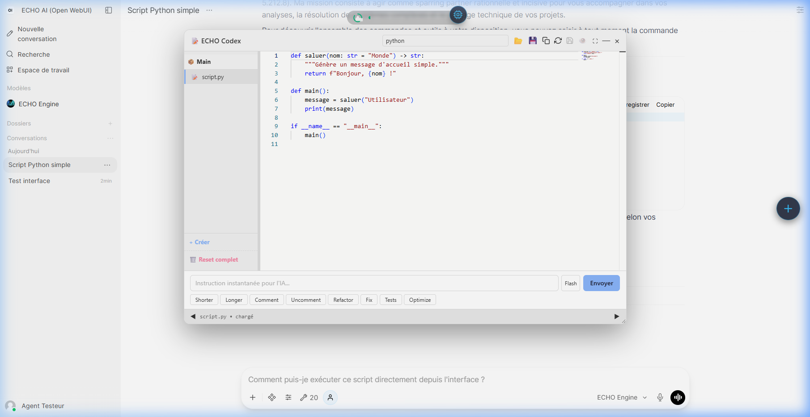

10. Planification & Exécution
Face à un problème complexe, ECHO ne se précipite pas. Il dispose d'outils dédiés pour structurer sa démarche et pour tester des solutions en toute sécurité.
1. Planification Stratégique (Le Cerveau Lent)

Lorsque vous confiez à l'IA une mission d'envergure (comme construire une application entière ou rechercher des informations sur plusieurs jours), le système va d'abord générer un Plan d'Action.
Ce plan prend la forme d'une feuille de route (check-list). Au fil de sa réflexion et de ses actions, ECHO met automatiquement à jour ce plan en cochant les étapes terminées ou en révisant sa stratégie en cas d'imprévu. Ce document survit à vos sessions : même si vous vous déconnectez, l'IA reprendra exactement là où elle s'était arrêtée à votre retour.
2. La Sandbox (Exécution Sécurisée de Code)

ECHO possède la capacité d'écrire, mais surtout d'exécuter du code informatique (Python ou JavaScript) en temps réel.
Si vous lui demandez de trier un fichier Excel de 100 000 lignes ou de résoudre un algorithme complexe, l'IA va générer un script et l'exécuter dans un environnement "bac à sable" ultra-sécurisé. Cela lui permet d'analyser d'immenses quantités de données avec la puissance de l'ordinateur, sans aucun risque pour votre système principal : tout ce qui est exécuté dans la Sandbox est détruit dès que le calcul est terminé.
⚙️ Dossier d'Ingénierie & Spécifications
1. Strategic Planner (strategic_planner.py)
L'outil gère la création et le suivi tactique des plans de l'IA.
- Création :
create_planrédige un fichier Markdown dans le Codex (Git) et l'indexe dans SQLite (tablePLAN_RECORDS). - Mise à jour :
update_planutilise un prompt de réécriture (SYSTEM_PROMPT_UPDATE) pour modifier l'état d'un plan (en attente[ ], en cours[/], terminée[x], échouée[!]). - Proprioception : Le modèle n'est pas notifié passivement du plan. Il doit interroger la base via
query_registrypour lire l'état global, épargnant ainsi le contexte.
2. Coding Worker (Sandbox d'Exécution)
Micro-service Docker isolé (echo-coding-worker) hébergeant worker_api.py (Flask, Port 5000).
- Architecture : Basé sur
python:3.14-slim. Flask est configuré en modethreaded=True. Important :matplotlibetrequestsne sont délibérément pas inclus (les graphiques sont gérés par Visual Intelligence). Libs dispos : pandas, numpy, scikit-learn, regex, sympy. - Isolation OS : Pour chaque requête (
POST /execute), le Worker crée unmultiprocessing.Process(Python) ou unchild_process(JS) avec son propretempfile.TemporaryDirectory(). Cela garantit un address space hermétique et détruit les séquelles mémoire après expiration du timeout (30s par défaut). - Sorties : Les flux
stdoutetstderrsont capturés viacontextlib.redirect_stdout/stderr. Tout retourstderrnon vide déclenche le statuterror.
Code Executor (code_executor_tool.py)
- code_executor : Permet au modèle d'exécuter du code (Python ou Node.js) dans une Sandbox isolée.